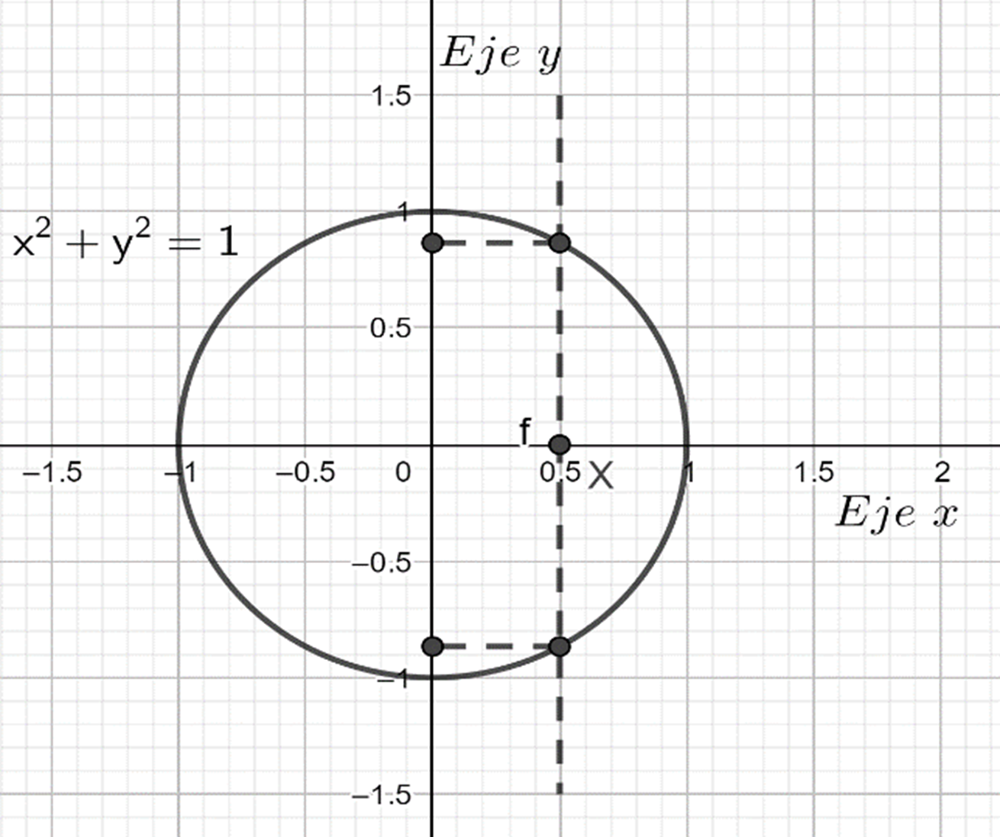
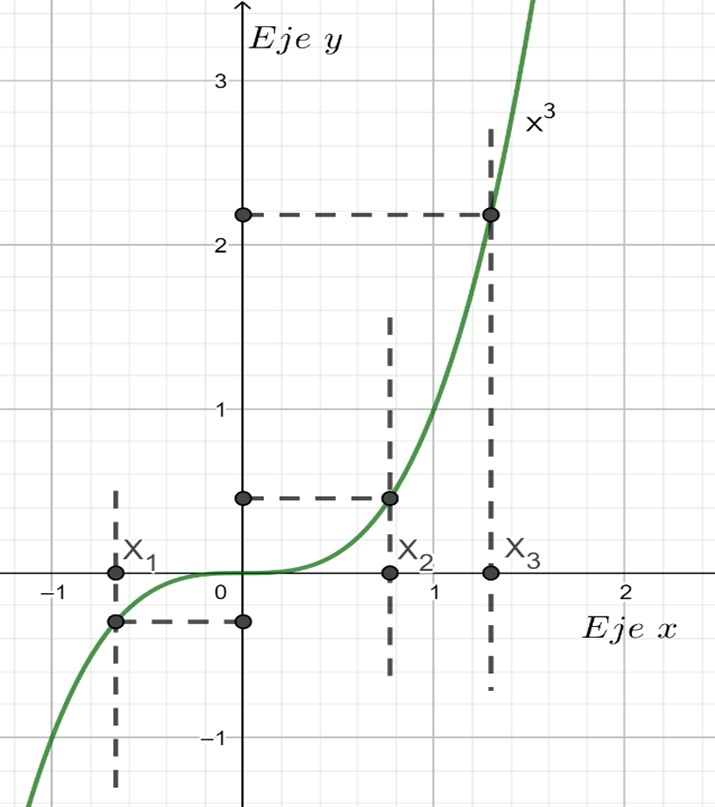
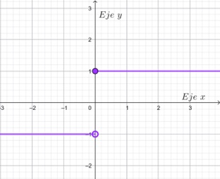
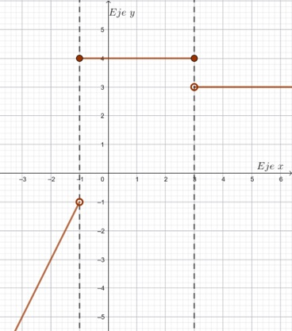
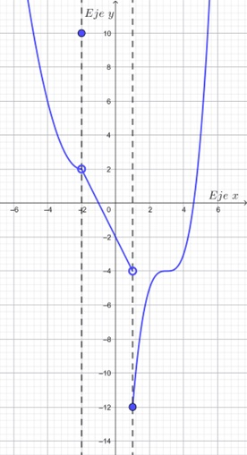

📖 Definición de Función
Cuando existe una relación entre dos magnitudes, $x$ e $y$, si el valor que adopta una de ellas ($y$) depende del valor asignado a la otra ($x$), decimos que $y$ es la variable dependiente y que $x$ es la variable independiente, y podemos escribir $y = f(x)$.
Definición formal
Decimos que $f$ es una función de un conjunto $A$ en otro conjunto $B$, y escribimos $f: A \to B$, si y sólo si para cada elemento $x \in A$ existe un único elemento $y \in B$ tal que $f(x) = y$.
Elementos de una función
- Dominio ($\text{Dom}\,f$): conjunto de partida, valores permitidos para $x$.
- Codominio: conjunto de llegada.
- Imagen ($\text{Im}\,f$): subconjunto del codominio que efectivamente se alcanza: $$\text{Im}(f) = \{\, y \in B : \exists\, x \in A \;/\; f(x) = y \,\}$$
Representación gráfica
Una curva en el plano es la gráfica de una función si y sólo si ninguna recta vertical la interseca más de una vez (prueba de la recta vertical).
❌ NO es función

La circunferencia $x^2 + y^2 = 1$ no es una función porque una recta vertical (como $x = 0.5$) la interseca en dos puntos. Un mismo valor de $x$ tiene dos imágenes diferentes de $y$.
✅ SÍ es función

La función cúbica $f(x) = x^3$ sí es una función porque cualquier recta vertical la interseca en un solo punto. Cada valor de $x$ tiene una única imagen $y$.
Si puedes dibujar una recta vertical que corte a la gráfica en más de un punto, entonces la relación no es una función. Esto se debe a que violaría la condición de unicidad: un valor de $x$ no puede tener dos o más valores de $y$.
Si no se especifica, el dominio es el mayor conjunto numérico donde tenga sentido la expresión. Por ejemplo:
- $f(x) = x^2 \;\Rightarrow\; \text{Dom}(f) = \mathbb{R}$
- $f(x) = \sqrt{x} \;\Rightarrow\; \text{Dom}(f) = [0, +\infty)$
- $f(x) = \dfrac{2x-5}{x^2-5x+6} \;\Rightarrow\; \text{Dom}(f) = \mathbb{R} \setminus \{2, 3\}$
Clasificación de funciones
| Tipo | Subtipos |
|---|---|
| Algebraicas | Polinómicas, Racionales, Irracionales |
| Trascendentes | Exponenciales, Logarítmicas, Trigonométricas |
📈 Función Lineal
Una función lineal es una función $f: \mathbb{R} \to \mathbb{R}$ de la forma:
Gráficamente se representa mediante una recta en el plano.
Elementos característicos
- Pendiente ($a$): indica la inclinación de la recta. $$a = \tan(\alpha) = \frac{\Delta y}{\Delta x} = \frac{y_1 - y_0}{x_1 - x_0}$$
- Ordenada al origen ($b$): punto donde la recta corta al eje $y$, es decir $(0, b)$.
- Raíz: valor de $x$ donde $f(x) = 0 \;\Rightarrow\; x = -\dfrac{b}{a}$. Punto $\left(-\dfrac{b}{a},\, 0\right)$.
Crecimiento y decrecimiento
- Si $a > 0 \;\Rightarrow\;$ función creciente
- Si $a < 0 \;\Rightarrow\;$ función decreciente
- Si $a = 0 \;\Rightarrow\;$ función constante (recta horizontal $y = b$)
Rectas paralelas y perpendiculares
- Paralelas: misma pendiente $\;a_1 = a_2\;$
- Perpendiculares: la pendiente de una es la inversa y opuesta de la otra $\;a_1 = -\dfrac{1}{a_2}\;$
️ Gráfico interactivo
Modificá los valores de $a$ (pendiente) y $b$ (ordenada al origen) para ver cómo cambia la recta:
- Raíz: $x = 0$
- Ordenada al origen: $(0, 0)$
- Función: creciente
📝 Ejercicios
Si la raíz es $4$, entonces $f(4) = 0$. Usando $f(x) = -3x + b$:
$0 = -3 \cdot 4 + b \;\Rightarrow\; b = 12$
$f(x) = -3x + 12$
$f(x) = -2x + 7$
Pendiente: $a = \dfrac{5-2}{\frac{1}{2}-(-1)} = \dfrac{3}{\frac{3}{2}} = 2$
Usando el punto $(-1, 2)$: $2 = 2 \cdot (-1) + b \;\Rightarrow\; b = 4$
$f(x) = 2x + 4$
Paralela $\Rightarrow$ misma pendiente: $a = -3$
$9 = -3 \cdot (-1) + b \;\Rightarrow\; b = 6$
$y = -3x + 6$
Perpendicular $\Rightarrow$ $a = -\dfrac{1}{-5} = \dfrac{1}{5}$
$-3 = \dfrac{1}{5} \cdot 1 + b \;\Rightarrow\; b = -\dfrac{16}{5}$
$y = \dfrac{1}{5}x - \dfrac{16}{5}$
📉 Función Cuadrática
Una función cuadrática es una función polinómica de grado 2:
Su gráfica es una parábola.
Forma canónica
- Vértice: $V = (h, k)$
- Eje de simetría: $x = h$
- Si $a > 0 \;\Rightarrow\;$ parábola abre hacia arriba (cóncava hacia arriba)
- Si $a < 0 \;\Rightarrow\;$ parábola abre hacia abajo (cóncava hacia abajo)
Raíces
Se obtienen resolviendo $a\,x^2 + b\,x + c = 0$ con la fórmula:
El discriminante $\Delta = b^2 - 4ac$ determina la cantidad de raíces reales:
- $\Delta > 0 \;\Rightarrow\;$ dos raíces reales distintas
- $\Delta = 0 \;\Rightarrow\;$ una raíz doble
- $\Delta < 0 \;\Rightarrow\;$ no tiene raíces reales
🎛️ Gráfico interactivo (forma canónica)
Modificá los parámetros $a$, $h$ y $k$ para explorar la parábola:
- Vértice: $(0, 0)$
- Eje de simetría: $x = 0$
- Concavidad: hacia arriba
📝 Ejercicios
Forma canónica: $f(x) = a\,(x - 1)^2 + 4$
Reemplazando $(0, 2)$: $2 = a\,(0 - 1)^2 + 4 \;\Rightarrow\; a = -2$
$f(x) = -2(x - 1)^2 + 4$
Forma polinómica: $f(x) = -2x^2 + 4x + 2$
Raíces: $x = -6$ y $x = 6$. Vértice $(0, -4)$.
$f(x) = a\,x^2 - 4$. Reemplazando $(6, 0)$: $0 = a \cdot 36 - 4 \;\Rightarrow\; a = \dfrac{1}{9}$
$f(x) = \dfrac{1}{9}x^2 - 4$
Forma factorizada: $f(x) = a\,(x + 1)(x - 4)$
Reemplazando $(1, 5)$: $5 = a \cdot (2) \cdot (-3) \;\Rightarrow\; a = -\dfrac{5}{6}$
$f(x) = -\dfrac{5}{6}(x + 1)(x - 4)$
a) Expresar el área en función de uno de sus lados.
b) ¿Cuánto deben medir los lados para que el área sea máxima?
Si un lado es $x$, el otro es $(25 - x)$.
a) $A(x) = x \cdot (25 - x) = -x^2 + 25x$
b) Vértice en $x = -\dfrac{25}{2 \cdot (-1)} = 12{,}5$ cm. Los lados miden $12{,}5$ cm $\times$ $12{,}5$ cm (es un cuadrado).
Área máxima: $A(12{,}5) = 156{,}25$ cm²
¿Qué cantidad de netbooks conviene producir para que el costo sea mínimo?
El mínimo está en el vértice: $x = -\dfrac{-20}{2 \cdot 0{,}0025} = \dfrac{20}{0{,}005} = \mathbf{4000}$ netbooks
Costo mínimo: $C(4000) = 90000 - 80000 + 40000 = \mathbf{50000}$ dólares
📊 Función Cúbica
La función cúbica tiene tres formas de representación:
Características
- Dominio e Imagen: $\mathbb{R}$
- Si $a > 0 \;\Rightarrow\;$ la función es creciente en todo su dominio
- Si $a < 0 \;\Rightarrow\;$ la función es decreciente en todo su dominio
- Presenta un punto de inflexión $(h, k)$ donde cambia la concavidad
🎛️ Gráfico interactivo
Modificá los parámetros $a$, $h$ y $k$:
- Punto de inflexión: $(0, 0)$
- Función: creciente en todo $\mathbb{R}$
- $\text{Dom}(f) = \mathbb{R}$ · $\text{Im}(f) = \mathbb{R}$
📝 Ejercicios
Eje $y$: $f(0) = 2 \;\Rightarrow\;$ punto $(0, 2)$
Eje $x$: $-x^3 + 2 = 0 \;\Rightarrow\; x^3 = 2 \;\Rightarrow\; x = \sqrt[3]{2} \approx 1{,}26 \;\Rightarrow\;$ punto $(\sqrt[3]{2},\, 0)$
Eje $y$: $h(0) = -(1)^3 - 1 = -2 \;\Rightarrow\;$ punto $(0, -2)$
Eje $x$: $-(x+1)^3 - 1 = 0 \;\Rightarrow\; (x+1)^3 = -1 \;\Rightarrow\; x+1 = -1 \;\Rightarrow\; x = -2 \;\Rightarrow\;$ punto $(-2, 0)$
Eje $y$: $f(0) = 2(1)^3 + 2 = 4 \;\Rightarrow\; (0, 4)$
Eje $x$: $2(x+1)^3 + 2 = 0 \;\Rightarrow\; (x+1)^3 = -1 \;\Rightarrow\; x = -2 \;\Rightarrow\; (-2, 0)$
Forma factorizada: $f(x) = 2(x+2)^3$ (raíz de multiplicidad 3)
Función Definida por Partes
Ejemplos visuales de funciones por partes
A continuación se presentan tres ejemplos gráficos de funciones definidas por partes. Observá cómo cada tramo del dominio tiene una expresión diferente y cómo se representan los extremos abiertos (círculo vacío) y cerrados (círculo lleno).
Ejemplo 1: Función signo

Análisis:
- Para $x < 0$: recta horizontal $y = -1$ (extremo abierto en $x = 0$)
- Para $x \geq 0$: recta horizontal $y = 1$ (extremo cerrado en $x = 0$)
- Esta función se conoce como función signo o signum
Ejemplo 2: Función escalonada

Análisis:
- Para $x < -1$: recta creciente $y = 2x + 1$ (extremo abierto en $x = -1$)
- Para $-1 \leq x \leq 3$: recta horizontal $y = 4$ (extremos cerrados)
- Para $x > 3$: recta horizontal $y = 3$ (extremo abierto en $x = 3$)
- Para esta función $Dom(f)=\R$ y su $Im(f)=\{-1;1\}$
Ejemplo 3: Función mixta (polinómica + lineal + cúbica)

Análisis:
- Para $x < -2$: parábola con vértice en $(-2, 2)$ (extremo abierto)
- Para $x = -2$: punto aislado en $y = 10$ (extremo cerrado)
- Para $-2 < x < 1$: recta decreciente $y = -2x - 2$ (extremos abiertos)
- Para $x \geq 1$: función cúbica $y = (x-1)^3 - 4$ (extremo cerrado en $x = 1$)
Existen funciones que no pueden representarse mediante una única expresión. En estos casos, dividimos el dominio en partes, de tal forma que para cada parte se aplica una expresión diferente.
Para calcular $f(x_0)$, identificamos en qué parte del dominio se encuentra $x_0$ y usamos la expresión correspondiente.
Ejemplo: Con la función anterior, $f(-5) = 2 \cdot (-5) + 1 = -9$ (porque $-5 < -1$)
$f(0) = 4$ (porque $-1 \leq 0 \leq 3$)
$f(5) = 3$ (porque $5 > 3$)
📝 Ejercicios
Eje $y$ ($x = 0$): como $-2 < 0 < 1$, usamos $f(x) = -2x - 2$
$f(0) = -2(0) - 2 = -2 \;\Rightarrow\; \textbf{(0, -2)}$
Eje $x$ ($f(x) = 0$): analizamos cada tramo:
- Tramo $x < -2$: $(x+2)^2 + 2 = 0 \;\Rightarrow\; (x+2)^2 = -2 \;\Rightarrow\;$ sin solución real
- Tramo $x = -2$: $f(-2) = 10 \neq 0$
- Tramo $-2 < x < 1$: $-2x - 2 = 0 \;\Rightarrow\; x = -1$ ✓ (está en el intervalo)
- Tramo $x \geq 1$: $(x-1)^3 - 4 = 0 \;\Rightarrow\; x = 1 + \sqrt[3]{4} \approx 2{,}59$ ✓
Raíces: $x = -1$ y $x = 1 + \sqrt[3]{4}$
👩 Guía de Reutilización para el Docente
Esta sección está pensada para que puedas subir, modificar y reutilizar este recurso en tu práctica áulica.
📤 Subir tu propia versión del HTML
Si querés adaptar este recurso (agregar ejercicios, cambiar colores, modificar contenidos), podés descargar el archivo HTML, editarlo con cualquier editor de texto (Notepad++, VS Code, Sublime Text) y subirlo a tu plataforma.
📁 Área de prueba local
Subí un archivo HTML para previsualizarlo en esta misma página:
🔧 ¿Cómo personalizar el recurso?
- Abrir el archivo HTML con un editor de texto.
- Modificar los colores: buscá los códigos hexadecimales (ej:
#a8d5ba,#7bc47f) y reemplazalos por los de tu preferencia. - Agregar ejercicios: copiá el bloque
<div class="exercise">...</div>y personalizalo. - Cambiar autoría: editá el
<header>y el<footer>. - Modificar los sliders: en las funciones interactivas, ajustá los atributos
min,maxystepde los inputs.
🎨 Estructura del archivo
<style>→ todos los estilos (colores verdes pastel)<nav>→ botones de navegación entre pestañas<section id="...">→ contenido de cada pestaña<canvas>→ gráficos interactivos<script>→ lógica de los gráficos y navegaciónMathJax→ renderizado de fórmulas LaTeX
📚 Sugerencias didácticas
- Usar los gráficos interactivos en el proyector para que los estudiantes visualicen el efecto de cada parámetro.
- Proponer a los estudiantes que anticipen cómo cambiará el gráfico antes de mover los sliders.
- Combinar el uso de este recurso con GeoGebra para profundizar.
- Los ejercicios tienen soluciones ocultas para que el estudiante pueda autocorregirse.
- Se puede proyectar en clase o compartir el archivo HTML por aula virtual.
⚙️ Requisitos técnicos
- Navegador web moderno (Chrome, Firefox, Edge, Safari).
- Conexión a internet (solo para cargar MathJax la primera vez; luego queda en caché).
- No requiere instalación de software adicional.
- Compatible con dispositivos móviles (diseño responsive).